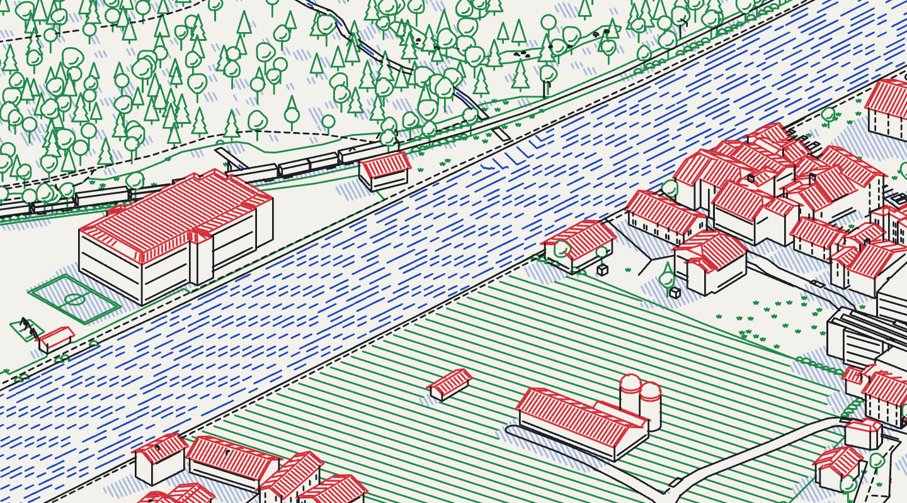
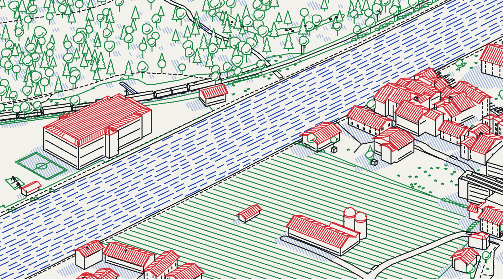

Original review · 15 November 2026
Reproduced at 46.6895° N, 7.8610° E, bearing 35°, at 1:1000, 1:1550 and 1:2500. Two mechanisms caused the bands: square-cell occupancy changed stroke lengths with angle, and nearby small tributary centre lines could steer parts of the main river sideways.


Spacing now checks actual distances between stroke samples. Deterministic offsets break alignment with the seeding grid. Strokes grow in both directions from a seed, and crowded remnants shorter than two spacings are omitted. The spacing setting itself stays at 1.2 mm for the reference pen and Detail.
Within mapped river polygons, centre lines with the decoder’s river/canal widths take priority over minor streams. Small stream-only areas can still follow their own centre lines. Lake and ocean algorithms are unchanged; the more open lake spacing from round 25 is retained.
| Scale | Whole-sheet strokes | Waste |
|---|---|---|
| 1:1000 | 12,365 → 11,349 | 4.4% → 4.6% |
| 1:1550 | 15,262 → 14,995 | 6.3% → 6.4% |
| 1:2500 | 20,903 → 20,790 | 8.6% → 8.6% |
Before LOD report · After LOD report (local generated files). Full sheets at all three scales and enlarged 1:1550 crops were inspected. Interlaken is now available as interlaken-river in the standard LOD lab.
Regression tests ensure a small tributary cannot rotate a main river’s hatching, and that median stroke length and coverage remain comparable across five channel orientations. Existing water clipping, wake clearance, repeatability and broad-pen tests also pass. Changed golden drawings were reviewed; changes are confined to water-wave and aggregate plotting summaries. Build and all 614 tests pass.
No physical print, exhaustive scale sweep or full review of every confluence was made. Direction still depends on available mapped centre lines and bank geometry; it is an artistic flow cue, not a hydrological simulation.